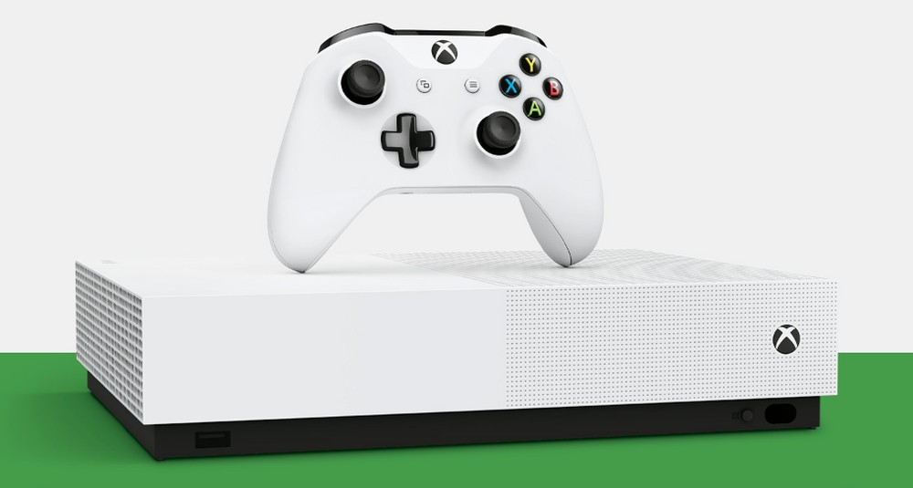
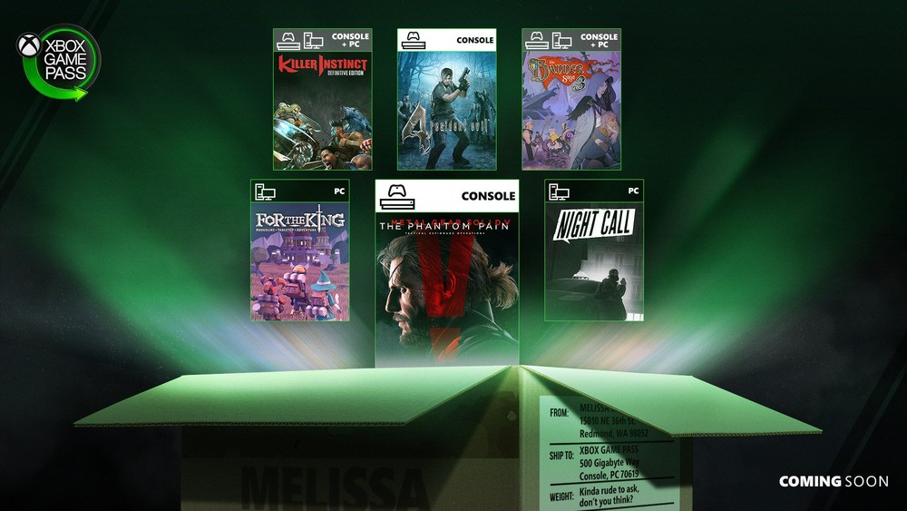

Microsoft's new console should come out at the end of the year, but does the current one still have a lot to offer?
The Xbox One is still Microsoft's current console. The video game, however, will be replaced by the Xbox Series X, the new generation of the device that is scheduled to launch later this year. The new console promises to be compatible with new games and provide better graphics and more fluid gameplays. However, buying the Xbox One in 2020 may be an option for those looking to save money. See below the pros and cons of investing in hardware today, even with the new generation about to debut.
Xbox One is one of the consoles with the largest library in the world and history. This is not only because of its huge list of its own games, exclusive or not, but also because of the compatibility with the Xbox 360 and the original Xbox, the first model of the brand. Few devices in history have offered this vast library, so the console is still a great option.
The Xbox Game Pass is a huge incentive for anyone who wants to buy an Xbox One today. For an affordable price, the user gains immediate access to an immense library of games, which can be downloaded and played without any additional impediment, such as a "Netflix of games".
As with competition, the price of the Xbox One is unlikely to be cut until the Series X is released. It is important to note that we are not guaranteeing anything, but the history of other consoles shows similar realities. So it may not be as worthwhile to still pay dearly on an older console.
The Xbox Series X promises to hit the market hard, including exclusive games of weight, which in the future should be revealed by Microsoft. Going without playing them can be a terrible reality for those who always bet on franchises of the company itself, such as Forza, Gears or Halo.
Microsoft has yet to disclose how the Xbox Series X will behave in terms of services or what kind of changes the launch of the new hardware will bring to the Xbox One. But it is always possible that the old console will receive limitations, just as it did in the competition, when the PS3 is no longer covered by the PS Plus subscription. It is also no guarantee that it will occur, but there is always a risk.